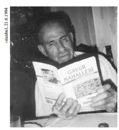

Kitap baskıya hazırlanırken,
14 Ekim 2006’da Amerika’da vefat eden,
Heredan-Diyarbakır-İstanbul-New Jersey çizgisinde
göçle geçen bir yaşam süren dayıma,
ustam Demirci Haço’ya…

Haçadur Temiz, 1923-2006
Ustam, varsın bundan böyle
Diyarbakır Demirciler Çarşısı’ndaki
örslerin kulağı çınlasın, anın bir de
bu kitaplarda yaşasın.